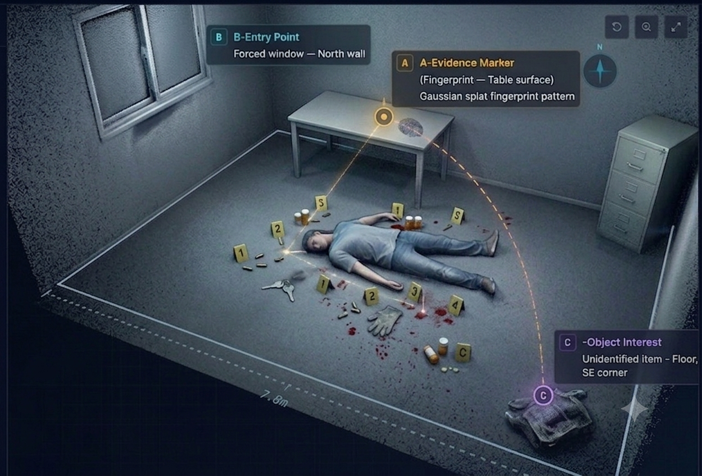

Tablet-Based Scene Acquisition
CaptureCapture complete crime scene video using standard consumer tablets. No specialized hardware required — any investigator in the field can initiate documentation instantly.
A secure advanced 3D workflow for scene capture, reconstruction, annotation, collaboration, and forensic archiving.
Six integrated stages transform a simple tablet recording into a fully annotated, securely archived 3D forensic asset.
Investigators capture the scene using a standard tablet, reducing the need for heavy equipment while preserving full spatial context and continuity.
The recorded video is processed into a high-fidelity 3D optimized scene, delivering photorealistic spatial data from ordinary footage.
Authorized users can explore the reconstructed scene from multiple viewpoints in high definition, navigating the space as if physically present.
Investigators add notes, evidence markers, measurements, and observations directly inside the 3D scene with full attribution and timestamp.
The scene is shared with selected team members or hierarchy for group analysis, concurrent annotation, and consensus-based decision-making.
Each scene is archived with full metadata: date, time, geolocation, user actions, and an immutable audit trail ensuring chain-of-custody integrity.
Every capability in the 3DForensics platform is designed for precision, security, and operational simplicity in forensic environments.
Capture complete crime scene video using standard consumer tablets. No specialized hardware required — any investigator in the field can initiate documentation instantly.

The pipeline processes raw video into a photorealistic 3D scene, reconstructing full spatial geometry without manual modeling.

Navigate the reconstructed scene in high-definition 3D. Pan, rotate, zoom, and explore every corner of the environment with photorealistic fidelity.

Place evidence markers, add notes, set measurements, and record observations directly within the 3D scene. All annotations are attributed and timestamped.

Invite team members to concurrently review and annotate the same scene. Real-time collaborative analysis accelerates investigation consensus.

Scenes can be escalated to senior leadership or external experts through controlled sharing protocols — preserving access boundaries and role integrity.
Every scene carries embedded metadata: GPS coordinates, acquisition timestamp, device identity, operator ID, and environmental conditions.
Immutable storage with a complete audit trail. Every view, annotation, export, and modification is logged — ensuring full chain-of-custody compliance.
An intuitive command center built for precision investigation — metadata, annotations, and collaboration controls at a glance.

3DForensics is designed from the ground up to meet the stringent security, traceability, and governance requirements of national security and forensic institutions.
Every user operates within a precisely defined permission scope. Access to scenes, annotations, exports, and archives is enforced at the application and storage layer.
Every action — login, view, annotation, export, modification, and share — is logged immutably with operator identity, timestamp, and IP address.
Scene data, annotations, and metadata are encrypted at rest using AES-256 and in transit via TLS 1.3. Keys are managed per investigation unit.
All annotations and modifications carry a version history. Rollbacks, diffs, and modification lineage are available to authorized supervisors at any time.
The platform enforces forensic chain-of-custody standards. Each scene has a cryptographic fingerprint validated against the original acquisition hash.
Scenes are shared through a tiered model — field investigator → supervisor → strategic command — with approval workflows and revocable access tokens.
Geolocation, acquisition timestamp, device fingerprint, operator identity, and environmental data are embedded and preserved across all archiving operations.
3DForensics delivers measurable operational improvements across the entire forensic investigation lifecycle.
Replace multi-hour manual diagramming with automated 3D scene generation. Documentation that previously took days is completed in hours.
A standard consumer tablet replaces costly 3D scanners, LIDAR rigs, and specialized hardware — enabling any unit to capture quality forensic data.
Investigators and supervisors gain intuitive 3D spatial comprehension of the scene — proportions, distances, and object relationships become immediately clear.
Senior investigators and external forensic experts can review scenes from any secure location — accelerating analysis without travel or physical access.
Concurrent annotations, real-time shared review sessions, and structured comment threads ensure investigative teams stay aligned across ranks and locations.
Every modification, view, and export is logged. The evidence chain is unbreakable — critical for judicial proceedings and administrative reviews.
Cases are preserved in a structured digital archive accessible for re-examination, cross-referencing, judicial review, or training program use years later.
Combining simple field acquisition, 3D scene reconstruction, collaborative analysis, and secure forensic archiving — 3DForensics redefines how investigations are documented and reviewed.
3DForensics is a classified-grade forensic platform intended for authorized public safety and national security agencies.